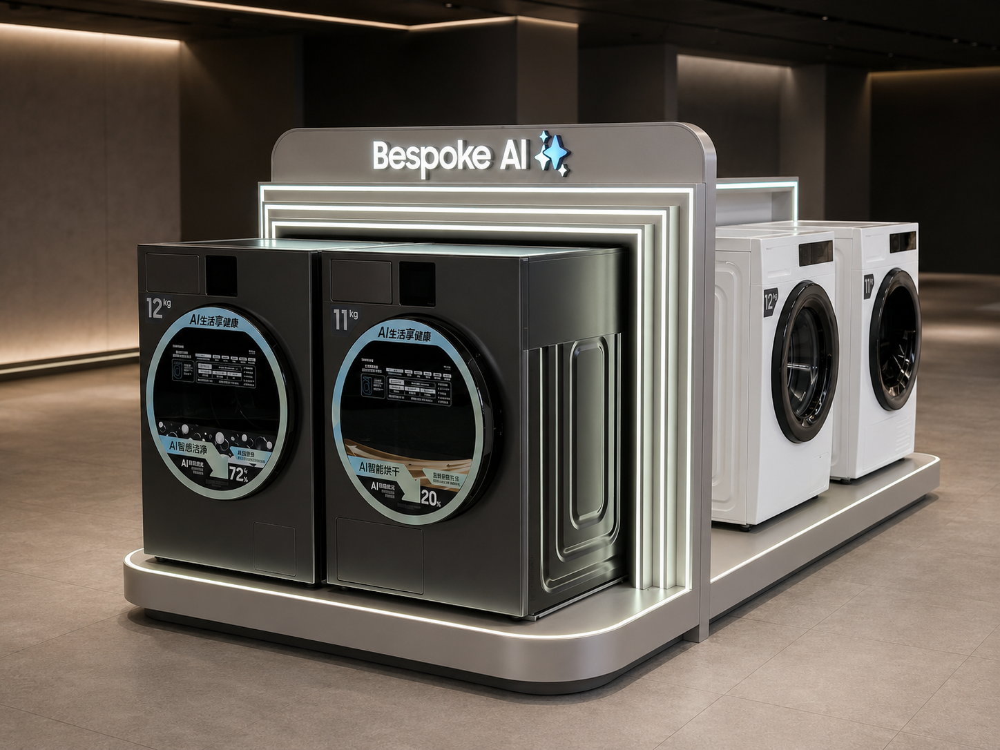
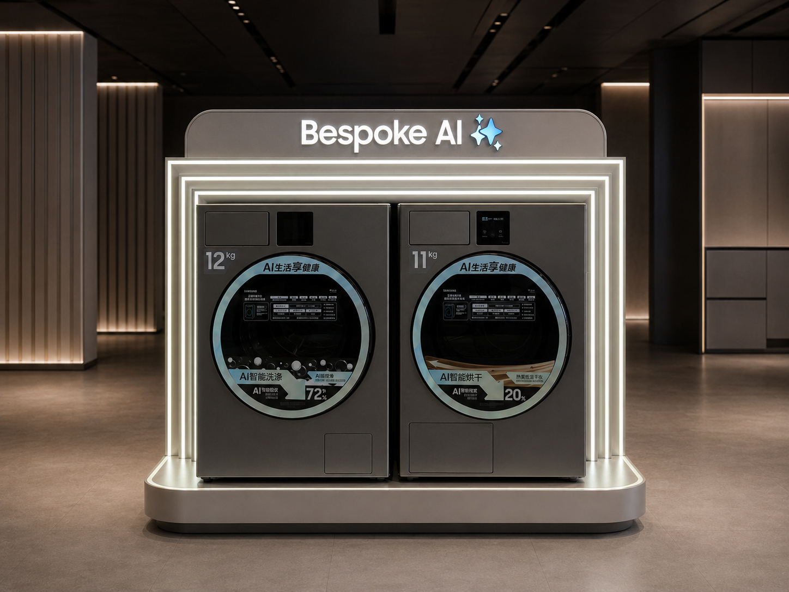
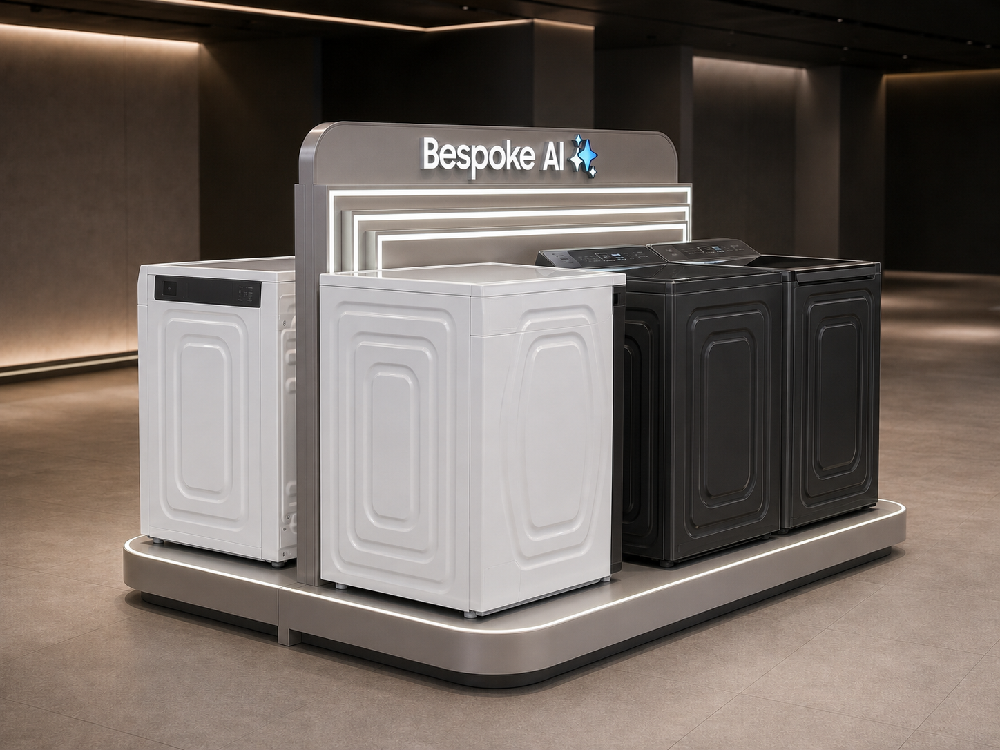
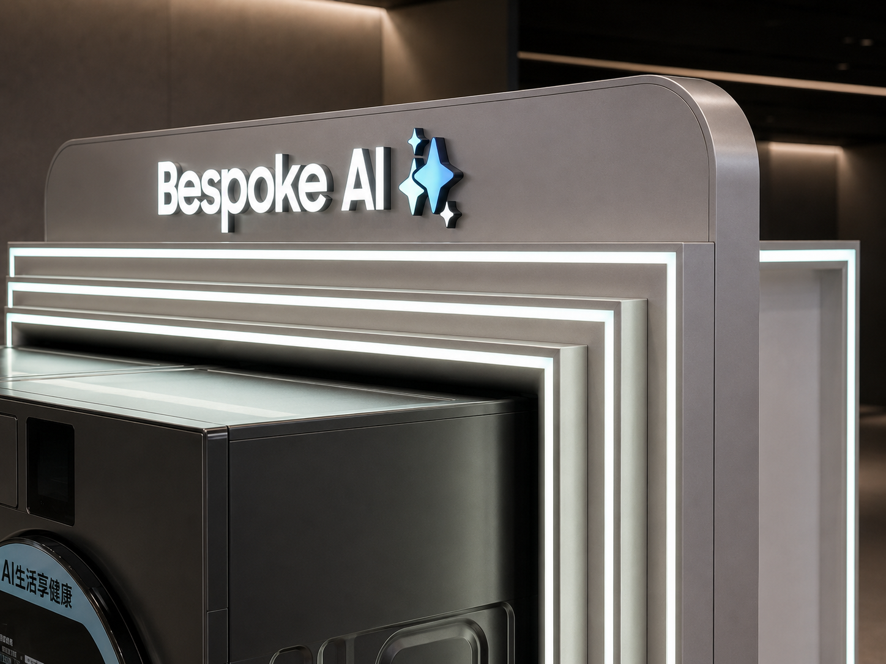
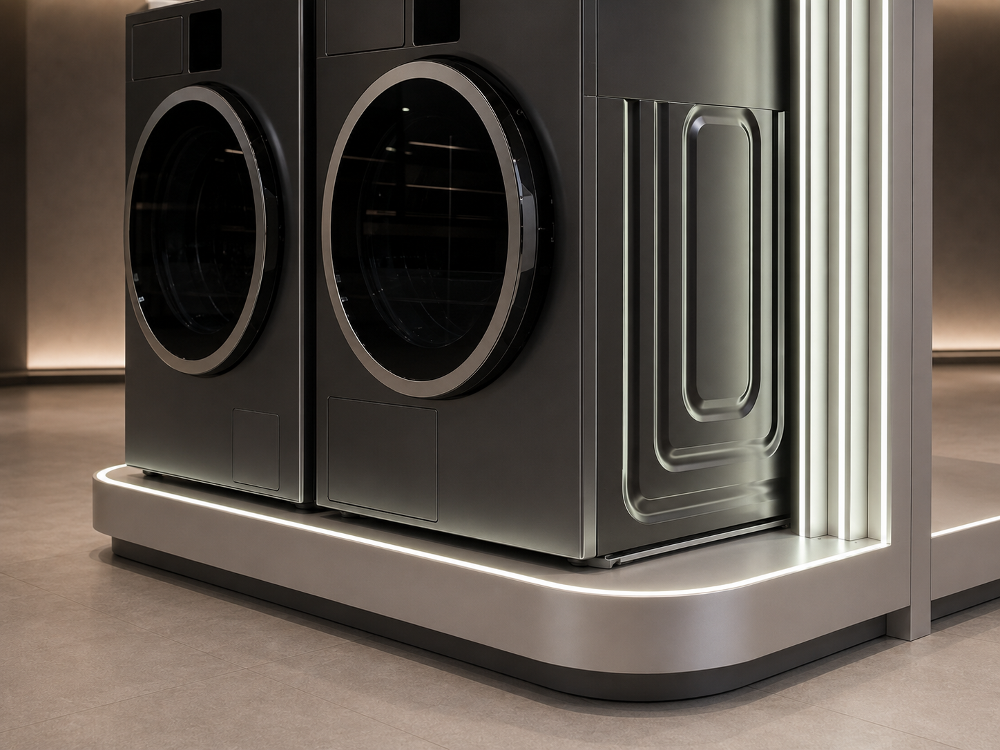

Samsung Bespoke AI Washer Display
A washer display may hold several large appliances. The design challenge is making them read as one clear AI experience rather than a crowded product lineup.
The Samsung Bespoke AI Washer Display is a custom double-sided appliance island designed and manufactured by REYI. Four washer and dryer positions, AI feature communication, a branded header, nested illuminated frames and one rounded platform create a complete retail experience from every approach.

Four appliances, presented as one Bespoke AI experience
The double-sided layout uses one continuous platform and central illuminated structure to organize four full-size appliances without breaking the display into separate bays. The dark front pair carries detailed AI washing and drying communication, while the reverse pair extends product choice and allows customers to move naturally around the island. Nested light frames create depth, draw attention from a distance and connect every appliance position to the Bespoke AI identity.

Four decisions keep a large appliance story clear and connected
Double-sided Capacity
Two appliance positions on each side create a compact four-product island while supporting comparison from different store approaches.
Clear AI Communication
Door graphics and eye-level feature panels turn technical washing and drying benefits into information customers can scan near the products.
Layered Visual Depth
Nested illuminated rectangles frame the appliances, lead the eye toward the center and make a shallow fixture feel more dimensional.
One Continuous Base
The rounded platform controls alignment, floor contact, power routing and appliance spacing while unifying both sides as one product.
The product idea becomes clear through three controlled details

The rear face keeps all four appliance positions within one compact island, giving customers another comparison route without exposing an unfinished back.

The rounded header, stepped frame depth and precisely inset light channels turn the brand identity into an architectural focal point.

The continuous base edge, restrained perimeter light and aligned side panels create durable floor contact with a calm premium finish.
Planning a Bespoke AI washer and dryer display?
Share the store plan, appliance schedule and communication brief with us. REYI can coordinate the island footprint, double-sided appliance positions, illuminated frame geometry, brand graphics, material samples, power routing and installation-ready construction. Programs can be ordered through a brand headquarters and delivered for use in markets worldwide.
- Store plan
- Appliance schedule
- Communication brief
- Island dimensions
- Power requirements
- Delivery timeline